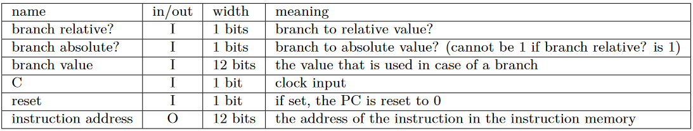
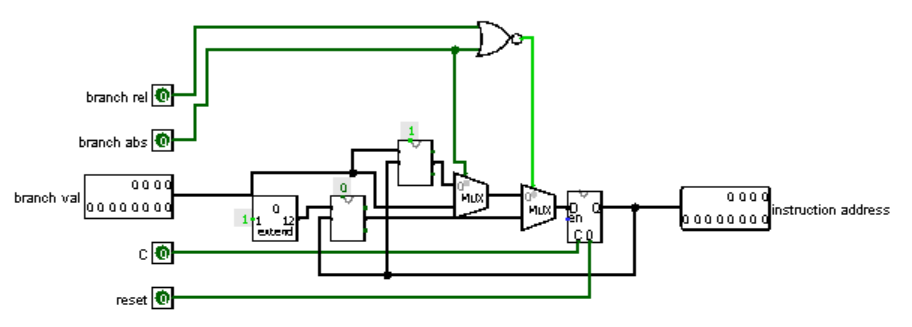
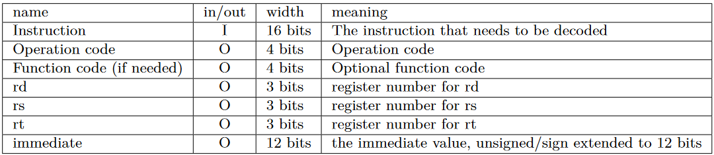
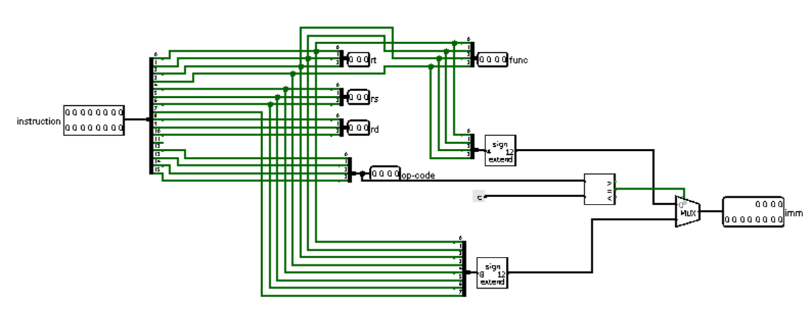
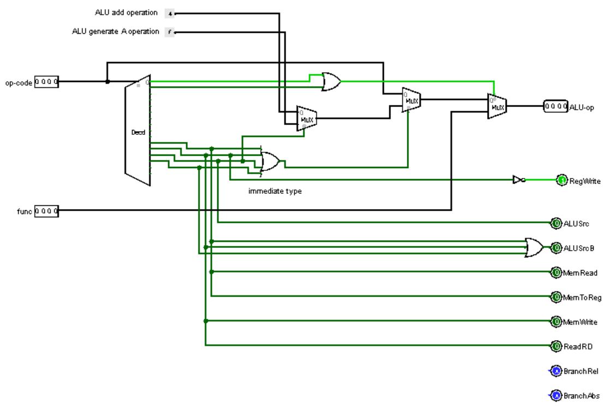

Titel: Computer Architectuur Project 5: Simple Datapath
Dit verslag werd opgesteld door:
De oplossing bestaat uit de volgende bestanden (geef alle bestanden op):
1. Build a circuit that implements a 12-bit program counter (PC). Use the Logisim SD_GroupXX.circ file provided on the course page. Rename the file so that ’XX’ is your group number. Use your 12-bit register. By default, the PC is increased each clock cycle, and the next instruction is read from memory. In case of a relative branch, the PC is increased, and then the branch value is added as a 2’s complement value (e.g., if the PC has value 10 and the next cycle there is a branch of value 5, then the next PC value is 16, not 15). In case of an absolute branch (or jump) the PC is directly set to the branch value. You should have the following inputs and outputs:
The following circuit represents a Program Counter.
3. Your datapath has to be able to read instructions and act upon them. For this purpose you should construct a decoder circuit that reads instructions from the instruction memory and outputs the different values contained in the instruction:
The decoder is constructed using splitters, the only caveat is to choose between an 8-bit immediate or a 4-bit immediate.
4. Your datapath is composed of different components and they all need to work together. A controller circuit will be needed to coordinate all these components. This circuit will have two inputs: operation code (4 bits) and function code (4 bits). The outputs will depend on how you decide to construct your datapath. Potential outputs are “Read memory”, “Write memory”, “ALU operation”, etc.
The controller can be implemented in many ways. Our implementation may not be the most elegant, but it surely is the easiest to understand.
Run the test files for your datapath. Do this during the development of your datapath, not afterwards! A test file is given for each type of instruction; run it on your circuit using the program Test_2324_zit1_datapath.py. You need to install Python (http:// python.org/download/releases/2.7.3/) to run Test_2324_zit1_datapath.py. Down- load Test_2324_zit1_datapath.py, tests.zip (from the course page) and logisim-generic-2.7.1.jar (http://sourceforge.net/projects/circuit/files/2. 7.x/2.7.1/) and save in the same folder as your adapted SD_GroupXX.circ project. The program takes a file containing small assembler programs that are datapath tests as input, and a SD_GroupXX.circ logisim file. It runs all datapath tests and reports test errors and failures.
All the tests run successfully. There's a script,
test.ps1, which runs all the tests at once.